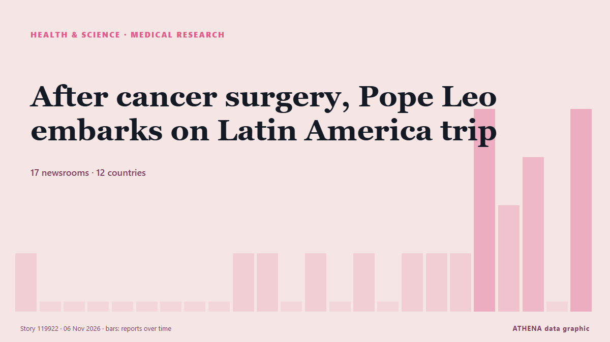

Υγεία, Επιστήμη & Έρευνα
ΧορηγούμενοΠαρουσιάζεται από  Cybernetics and Artificial Intelligence Lab Welcome to the Cybernetics and Artificial Intelligence Laboratory, established at the Department of Business Administration of the National and Kapodistrian University of Athens. The lab is headed by Professor Dimitrios Thomakos. The lab aims to do research that can be published in top venues. Our research uses tools and methods of Artificial Intelligence, and lies in the following areas: - Forecasting - Decision making - Cyber security - Finance We are always looking forward to collaborating with exceptional students!
Cybernetics and Artificial Intelligence Lab Welcome to the Cybernetics and Artificial Intelligence Laboratory, established at the Department of Business Administration of the National and Kapodistrian University of Athens. The lab is headed by Professor Dimitrios Thomakos. The lab aims to do research that can be published in top venues. Our research uses tools and methods of Artificial Intelligence, and lies in the following areas: - Forecasting - Decision making - Cyber security - Finance We are always looking forward to collaborating with exceptional students!
Οι τίτλοι των ειδήσεων παρουσιάζονται στα αγγλικά, όπως δημοσιεύτηκαν.

Ιατρική έρευναAfter cancer surgery, Pope Leo embarks on Latin America trip
Pope Leo XIV is kicking off a three-nation tour of Latin America with a visit to Uruguay, three weeks after undergoing lung cancer surgery that had put the entire trip into question. από NPR
| 24 Οκτ | 36 |
|---|---|
| 25 Οκτ | 45 |
| 26 Οκτ | 83 |
| 27 Οκτ | 80 |
| 28 Οκτ | 79 |
| 29 Οκτ | 90 |
| 30 Οκτ | 83 |
| 31 Οκτ | 46 |
| 1 Νοε | 34 |
| 2 Νοε | 103 |
| 3 Νοε | 71 |
| 4 Νοε | 89 |
| 5 Νοε | 54 |
| 6 Νοε | 16 |
Democratic victories bring historic breakthroughs for women and minorities
CHICAGO: Voters across the US elected a historic slate of women, candidates of color and other underrepresented politicians on Tuesday, reshaping the face of political leadership as Democrats rode a… από Business Recorder
NASA's Swift space telescope plunges to Earth after 22 years in orbit
One of NASA's premier space telescopes plunged to Earth on Wednesday, ending its 22-year investigation of gamma ray bursts and exploding stars. από CBC News (alternative feed)
Guinea Bissau: Guinea-Bissau Cancels Controversial US-Funded Hepatitis B Vaccine Trial on Newborns
[allAfrica] Guinea-Bissau has cancelled a proposed hepatitis B vaccine trial on newborn babies following international criticism that it was unethical and potentially exploitative. από AllAfrica
Scientists find signs of red blood cells and collagen in dinosaur fossils
Palaeontologists found fossilised signs of dinosaur blood and collagen in a 115-million-year-old dinosaur bone. από Times of India
Ancient coins suggest influential Iron Age king was female
Bournemouth University (BU) archaeological research has revealed that Iron Age British ruler "Verica," who was central to the Roman invasion of Britain in A.D. από Phys.org
Ancient DNA charts spread of Celtic and Germanic languages
Hundreds of millions of people today speak Germanic languages: English, Dutch, German, Danish, Swedish, etc.... από ScienceAlert
Washington state resident dies from bird flu following exposure to infected cattle
A person in Washington state has died from complications of the bird flu, the first such U.S. death in a year. από STAT News
British man infected with Ebola to be flown to UK for treatment
It is believed he is a healthcare worker who tested positive amid the outbreak in the Democratic Republic of the Congo. από Evening Standard (London)
British doctor infected with Ebola in Congo being treated in London hospital
The medical doctor was brought to the UK on a medical evacuation flight. από The Irish News (Belfast)
Manchester Christmas Markets 2026 opening and closing times as thousands set to descend on city centre
Here's what you need to know if you're visiting Manchester's Christmas markets. από Manchester Evening News
WHO approves clinical trials for two new Ebola vaccines
The World Health Organization has approved clinical trials for two new Ebola vaccines, as doctors fight to control an outbreak in Africa that has killed more than 5,300 people. από RTÉ News
Thailand fossil teeth reveal prehistoric 'giant rat' weighing 30kg
BANGKOK: A giant rodent weighing around 30 kilogrammes roamed what is now southern Thailand 33 to 35 million years ago, scientists said, after identifying a previously unknown species from two… από New Straits Times
Three injured in violence at Athens university campus
Nov 4 - A group of people, some wearing helmets, attacked a student assembly at the University of Athens campus on Wednesday, injuring three people, Greece's medical emergency service and the… από The Straits Times
U.S. Will Drop Smuggling Charges Against Russian-Born Harvard Medical School Scientist
Prosecutors dropped the charges after a federal judge cleared the way for Kseniia Petrova to obtain evidence supporting her claim that she was being vindictively prosecuted. από The Moscow Times
38 Uzbek universities make QS Asia Rankings 2027
38 universities in Uzbekistan have been included in the QS World University Rankings: Asia 2027, with 19 making it into the top 1,000. από Kun.uz (English)
Anthrax Outbreak Kills Dozens of Hippos in DR Congo
Deadly bacterial disease confirmed in Virunga National Park as authorities warn of potential risks to nearby communities and wildlife. από News of Bahrain
Ex-Prince Andrew called to testify in civil case, 1st royal in 156 years to get witness summons
The former Prince Andrew has been called to testify as a witness in a civil fraud trial, marking what is believed to be the first time in more than 150 years that a member of the royal family has… από The Canadian Press (via CityNews)
COVID class action certified over alleged negligence at Toronto long-term care home
Lawsuit alleges Downsview and Gem were grossly negligent in their response to the pandemic, resulting in multiple outbreaks at the home. από The Globe and Mail
Uneven and Fragile Progress Against Neglected Tropical Diseases – New WHO Report
While substantial progress has been made in driving down the global burden of neglected tropical diseases (NTDs), trends are “uneven and fragile”, and several diseases are off course to meet 2030… από Health Policy Watch
EFF member killed outside voting station
An EFF member was fatally stabbed outside a voting station in Polokwane on Thursday morning. από SABC News
Australia plans A$28m barriers to stop invasive cane toads spreading
A new project involving Curtin University and Rio Tinto seeks to establish a waterless barrier for cane toads. από Times of India
BBC expert says new NHS blood test that detects cancer early could be 'game changer'
More than 20,000 NHS patients are set to take part in the world-first cancer blood test trial. από WalesOnline
‘Zeptoverse’: CERN scientists uncover evidence of extraordinarily rare particle decay
Scientists at CERN have found evidence of an extraordinarily rare particle decay using the Large Hadron Collider. από Euronews English
Liverpool care boss suspended after putting terminally ill man at 'unwarranted risk of harm'
Catherine Inguyi Ngaira provided care for a man by the name of patient A in 2020 following his discharge from hospital. από Liverpool Echo
Ground cinnamon recalled in 14 states because of elevated lead levels
Why cinnamon has repeatedly been found to contain potentially dangerous amounts of lead By Mark Huffman of ConsumerAffairs November 3, 2026 SLR Food Distribution Inc. has recalled Wise Wife brand… από Consumer Affairs
Democrats take House and Senate from Republicans in US midterm rout
Democrats will control both chambers of Congress after flipping seats in Republican strongholds. από Malaysiakini
Scientists Crack Secret Code of Lock From Treasure-Laden 16th-Century Shipwreck
Researchers have cracked the four-letter secret code of a 400-year-old combination lock recovered from a shipwreck off the coast of Wales. από Greek Reporter
Cardiff City 3-3 West Ham highlights
Cardiff City's injury crisis has deepened ahead of West Ham's visit, with Brian Barry-Murphy facing mounting selection headaches and fresh concerns. από WalesOnline
Evolution has repeatedly turned hawkmoth genitals into defensive tools
The genital structures of male hawkmoths are lifesavers. από Phys.org
WHO sounds alarm over lack of physical activity among teens
GENEVA, Switzerland (AFP) — A quarter of teens globally engage in basically no physical activity — not even an hour of exercise a week — the World Health Organization (WHO) said Wednesday, warning… από Jamaica Observer
NFL-Lions linebacker Campbell has full movement in lower body after injury
Jack Campbell took a hard hit on his helmet from T.J. από Times of India
Lagos Opens Centre For Legal Research, Training
While the government will provide policy direction, legitimacy and strategic oversight, the private sector is expected to contribute funding, technical expertise, innovation and operational… από Channels TV
Four Tet Shares Remix of The Durutti Column
The UK artist has taken on Vini Reilly's 'Your Shadow At Morning' Vini Reilly, AKA The Durutti Column, photo by Michael Stef Four Tet has shared a remix of The Durutti Column's track 'Your Shadow At… από The Quietus
Nigeria: Cheap Version of Breakthrough HIV Prevention Shot Approved
[Daily Trust] The US Food and Drug Administration on Monday approved a low-cost version of a twice-yearly HIV prevention shot, bringing the breakthrough drug closer to market in low-income countries. από AllAfrica